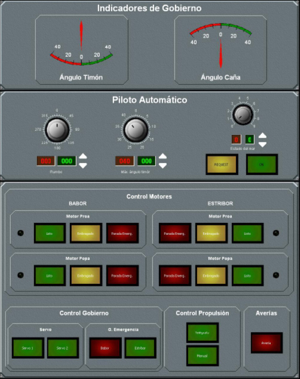
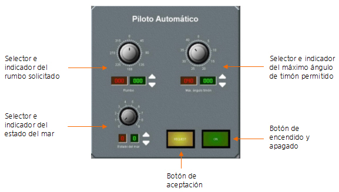

Panel de Control 2
Este panel de control es una pantalla táctil dividida en varias áreas desde las que se pueden realizar las siguientes acciones:

A continuación se describe cada una de las áreas que integran el panel.
Indicadores de gobierno
El área de indicadores de gobierno muestra en cada momento el ángulo de timón actual del buque y la caña solicitada
Piloto automático
El área de Piloto Automático contiene los controles e indicadores del Piloto Automático que a continuación se describen:

Permite establecer el rumbo que debe mantener el buque y consta de un selector analógico (arriba), un campo de rumbo pedido (verde) y un campo de rumbo aceptado (rojo).
Para introducir el rumbo, el operador debe tocar el selector analógico en la posición elegida (de 0 a 359) y el valor marcado aparece inmediatamente en el campo de rumbo pedido.
Para un ajuste fino del dato, se usan las flechas situadas a la derecha de este campo. Al tocar la flecha arriba el dato se incrementa en una unidad y al tocar la flecha abajo el dato disminuye en una unidad.
Permite establecer el máximo ángulo de timón del buque durante el funcionamiento del piloto automático y consta de un selector analógico (arriba), un campo de ángulo pedido (verde) y un campo de ángulo aceptado (rojo).
Para introducir el ángulo, el operador debe tocar el selector analógico en la posición elegida (de 0 a 45) y el valor marcado aparece inmediatamente en el campo de ángulo pedido.
Para un ajuste fino del dato, se usan las flechas situadas a la derecha de este campo. Al tocar la flecha arriba el dato se incrementa en una unidad y al tocar la flecha abajo el dato disminuye en una unidad.
Permite establecer el funcionamiento del piloto automático en función del estado del mar y consta de un selector analógico (arriba), un campo de estado de mar pedido (verde) y un campo de estado de mar aceptado (rojo).
Para introducir el estado del mar, el operador debe tocar el selector analógico en la posición elegida (de 0 a 10) y el valor marcado aparece en el campo de estado de mar pedido.
Para un ajuste fino del dato, se usan las flechas situadas a la derecha de este campo. Al tocar la flecha arriba el dato se incrementa en una unidad y al tocar la flecha abajo el dato disminuye en una unidad.
El selector e indicador de Estado de la Mar sólo tiene efecto en los buques de tres grados de libertad.
Al tocar este botón, los valores introducidos en los campos pedidos pasan a los campos aceptados, siendo estos últimos valores los que usará el piloto automático para ejecutar la maniobra.
Al tocar este botón, se ilumina y se inicia el funcionamiento del piloto automático considerando los valores de rumbo y ángulo de timón aceptados (rojos). Al tocarlo de nuevo, el botón se apaga y se detiene el funcionamiento del piloto automático.
Control de Motores
El área de control de motores contiene los botones de control de los cuatro motores que puede llevar el buque: motor de babor a proa, motor de babor a popa, motor de estribor a proa y motor de estribor a popa.
En los buques con un solo motor sólo están activos los botones de estribor.
Si el buque tiene un solo motor por eje, sólo están activos los botones del motor de popa.
Cada motor se controla con los siguientes botones:
Control de Gobierno
El área de control de gobierno contiene los siguientes botones:
Control de Propulsión
El área de control de propulsión contiene los siguientes botones:
Averías
Cuando el Instructor introduce cualquier avería en el buque (en los equipos, comunicaciones o motores), este indicador se enciende de forma intermitente y suena una alarma. Cuando el operador lo presiona (reconociendo la avería), el indicador se ilumina de forma fija y la alarma sonora se para; finalmente se apaga cuando el instructor elimina todas las averías del buque.
Cuando la avería provocada por el instructor es una reducción de la potencia del motor, el led situado a la derecha del botón de Listo se ilumina.
Una vez reconocida la avería, al volver a tocar el botón, se abre la ventana de Control de Averías y Capacidades en la que el operador puede consultar las averías que el instructor ha asignado al buque. En esta ventana se muestran todos los elementos (distribuidos en tres solapas) que el instructor puede averiar, cada elemento tiene una casilla anexa que aparece marcada cuando el elemento está dañado.